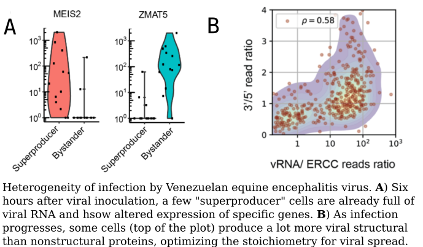

Our preprint on the landscape of Venezuelan equine encephalitis virus infection is out!
https://www.biorxiv.org/content/10.1101/2020.02.18.955393v2
Venezuelan equine encephalitis virus (VEEV) is a human pathogen that has caused a number of large outbreaks in central and south America for more than a century. We used our viscRNA-Seq approach, previously applied to dengue and Zika viral infections to VEEV and found that
- within 6 hours of inoculation, a few “superproducer” cells are already full of viral RNA
- within 12 hours, most cells are shutting down host gene expression and only focus on viral production
- within 24 hours, some cells with upregulated intracellular trafficking genes are producing a lot more viral structural proteins than enzymes, which is the optimal stoichiometry (in theory) to spread as much virus as possible.
We also compared the changes in gene expression caused by VEEV with other viral infections and found that each virus leaves a specific “signature” on the host transcriptome that could be useful to reconstruct the cause of an unidentified infection.
Thank you to all authors for their amazing work, and special thanks to Zhiyuan Yao (my co-first author) and Nuttada Panpradist (you’re such a talented bioengineer!).